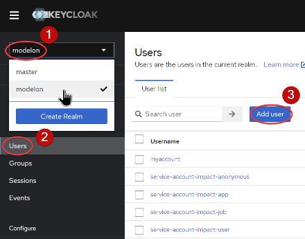
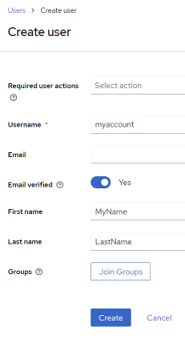
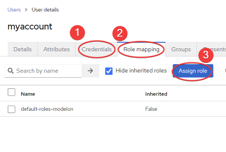

Server Update🔗
Before you install Modelon Impact, it is highly recommended that you update your server with all the latest patches. The installer will not do this for you in case you might want to be in control of the patch level of your server.
If you'd like to update your server, run these commands:
$ sudo apt-get update
$ sudo apt-get upgrade
Download Modelon Impact🔗
You will find all released versions on of Modelon Impact on our Github page. Download the desired version to your home directory on Linux. Then, unpack the archive file (replacing RELEASE with the actual file name) to /var/impact.
$ sudo mkdir /var/impact
$ sudo tar zxfv RELEASE.tar.gz -C /var/impact
Install Modelon Impact🔗
Installing Modelon Impact as 'root' or a Regular User?🔗
These instructions assume that you are installing Modelon Impact as regular user with sudo rights or the root user.
We recommend that you run /var/impact/modelonimpact.sh as your regular user and without sudo in front of it. The script will ask for your password for the tasks that require elevated access rights.
The script modelonimpact.sh will not let you run certain functions as a regular user without sudo rights.
Operating System Environment🔗
The script modelonimpact.sh will prepare the operating system environment for Modelon Impact.
$ /var/impact/modelonimpact.sh
The admin script will install all the required software and configure your environment so you can run Modelon Impact. If anything is missing, the script will resolve it for you.
The first time you run the script, you will be asked to install the required software packages. If you get the following message, write “YES” to have them installed for you.
The following software prerequisites are needed to use this script and install Modelon Impact:
* curl
* net-tools
* bind9-dnsutils
* bsdmainutils
* Docker and Docker Compose
* jq
Write YES to install the software now, or press ENTER to exit: YES
After the required software has been installed, you should logout and login to the shell, as several environment variables will have been changed.
Run the script again, to check the remaining prerequisites:
$ /var/impact/modelonimpact.sh
This time, it will make sure all permissions are correct, then exit to make sure your shell environment is correct:
$ /var/impact/modelonimpact.sh
__ __ _ _ ___ _
| \/ | ___ __| | ___| | ___ _ __ |_ _|_ __ ___ _ __ __ _ ___| |_
| |\/| |/ _ \ / _` |/ _ \ |/ _ \| '_ \ | || '_ ` _ \| '_ \ / _` |/ __| __|
| | | | (_) | (_| | __/ | (_) | | | | | || | | | | | |_) | (_| | (__| |_
|_| |_|\___/ \__,_|\___|_|\___/|_| |_| |___|_| |_| |_| .__/ \__,_|\___|\__|
|_|
Accurate Simulations. Better Decisions.
Please enter the password for "impactuser" to run with elevated access rights, if asked for it.
Some required permissions are missing, we will have to correct this first.
Adding user impactuser to group docker
To pick up this new group membership, you will have to, either
- if you are on Ubuntu Desktop: reboot the server.
- if you are on Ubuntu Server: log out and in again
Please rerun this command when you're back.
Alternatively, you can run the command 'su -l impactuser' to get a shell with the correct environment.
The script creates the group docker and adds your user to the group. The directories under /etc/impact will be created and made accessible to the docker group.
License and TLS Certificate🔗
Before you start the installation procedure, you will need to copy your license and a TLS certificate to the server.
-
License:
Copy the file
license.yamlto the folder/etc/impact/licenses. The license file is provided by Modelon. -
TLS Certificate:
Copy your certificate files to the folder
/etc/impact/certs. Name the two filestls.crtandtls.key. Both files must be in PEM format. The private key file must be unencrypted and contain an RSA key. Thetls.crtfile must contain the server certificate and any intermediate certificates, all concatenated together into one file. The certificate is provided by you.
Install Modelon Impact🔗
To run the installer, add the option install to the admin script:
$ /var/impact/modelonimpact.sh install
The first required information is your login to the Modelon Container Registry, which you receive from Modelon.
Modelon Impact is Not Installed.
The certificate and key in /etc/impact/certs are a valid pair
Certifiate is valid for these domains:
*.mycompany.com
mycompany.com
Certificate validity period:
notBefore=Mar 15 00:00:00 2023 GMT
notAfter=Mar 14 23:59:59 2024 GMT
The certificate dates are valid.
The configuration file (/etc/impact/config) does not exist!
Write YES to generate the configuration file, or press ENTER to exit: YES
Please enter the Modelon Container Registry username.
(Press enter for <please update>): <ACR_username>
* Username set to: <ACR_username>
Please enter the Modelon Container Registry password.
(Press enter for <please update>): <ACR_password>
* Password set to: <ACR_password>
Next, you will be asked to input the fully qualified domain name for your server.
Enter the URL (FQDN) for your Modelon Impact installation, without http:// or https://: modelon-impact.mycompany.com
* URL set to: modelon-impact.mycompany.com
The installer needs to know which network interface you're binding to. The default is 0.0.0.0, which will allow access to Modelon Impact over the network.
If you choose 127.0.0.1 (localhost), Modelon Impact will only be running locally on your server and will not be accessible from the rest of your network.
If you require Modelon Impact to bind to a specific network interface, you can even write its IP address here.
Enter the IP you want Modelon Impact to bind to.
These are the configured interfaces on your server:
0.0.0.0 Service available on the network.
127.0.0.1 Service available on local server only.
(Press enter for 0.0.0.0): 0.0.0.0
* IP set to: 0.0.0.0
The next step is to set the administrative username and password for the authentication service, Keycloak. If no prior password is set in the config file, you will be suggested a random password.
Enter the desired username for the IAM admin user.
(Press enter for admin):
* IAM adminstrator username set to: admin
Enter the desired password for the IAM admin user.
(Write RANDOM for a generated password, or press enter for MQ0ezoiEauo3Hmum):
* IAM adminstrator password set to: MQ0ezoiEauo3Hmum
The next configurable option is the backup directory:
Please enter the path for backups
(Press enter for /var/impactbackups):
* Backup path set to: /var/impactbackups
You will be asked to enter the Modelon Impact Productivity Level. This decides how much processing power a user can utilize and is decided by the license you have purchased.
The accepted values for Productivity Level are 1, 4 and 16, which corresponds to the Modelon Impact Productivity Levels:
| Productivity | Worker count | Default compiler memory |
|---|---|---|
| 1 | 2 | 4 GB |
| 4 | 4 | 4 GB |
| 16 | 16 | 8 GB |
Enter the Modelon Impact Productivity Level. This cannot exceed your productivity license (1, 4 or 16):
(Press enter for 1): 4
* Number of Modelon Impact workers set to: 4
You will be asked for the quota space per user for workspace sharing functionality.
Enter user storage quota for sharing workspaces (in gigabytes) (Press enter for 10):
* User storage quota for sharing workspaces set to:
Finally, and optionally, if you wish to use an outbound proxy for internet traffic, This covers both http and https.
* If you are wishing to use an outbound Proxy for traffic to the internet.
* Please enter values for the following 2 options, e.g. a URL 'http://proxy.example.com:3128/', if not please leave blank.
For the HTTP entry.
Enter the URL to your proxy for outbound HTTP traffic.
For the HTTPS entry.
Enter the URL to your proxy for outbound HTTPS traffic.
The configuration will now be saved. All your configuration settings can be found in the file /etc/impact/config.
After the configuration, you will be asked if you want to install Modelon Impact.
If you have made a mistake during the configuration, exit the installation now.
Config file written to /etc/impact/config.
The hostname modelon-impact.mycompany.com was found on the DNS server XX.XX.XX.XX
You are now ready to install Modelon Impact
If you want to change any of the configuration options, exit the installer and run 'modelonimpact.sh config'.
When reconfigured, run 'modelonimpact.sh install' to continue the installation.
Write YES to install Modelon Impact, or press ENTER to exit: NO
Then run this command to be guided through the configuration settings once more:
$ /var/impact/modelonimpact.sh config
When you are satisfied with the configuration, run the installer again.
$ /var/impact/modelonimpact.sh install
Whether you decided to exit the installer or not, you will now be asked if you want to install Modelon Impact.
You are now ready to install Modelon Impact
If you want to change any of the configuration options, exit the installer and run 'modelonimpact.sh config'.
When reconfigured, run 'modelonimpact.sh install' to continue the installation.
Write YES to install Modelon Impact, or press ENTER to exit: YES
The installer will set up your Modelon Impact environment, this can take up to one hour, depending on your Internet bandwidth and server performance. A successful installation ends like this:
...
conf-provisioning-1 | NAME: impact
conf-provisioning-1 | LAST DEPLOYED: Mon Oct 23 09:16:57 2023
conf-provisioning-1 | NAMESPACE: impact
conf-provisioning-1 | STATUS: deployed
conf-provisioning-1 | REVISION: 1
conf-provisioning-1 | TEST SUITE: None
conf-provisioning-1 | NOTES:
conf-provisioning-1 | =================================
conf-provisioning-1 | |_ _| \/ | _ \/_\ / __|_ _|
conf-provisioning-1 | | || |\/| | _/ _ \ (__ | |
conf-provisioning-1 | |___|_| |_|_|/_/ \_\___| |_|
conf-provisioning-1 |
conf-provisioning-1 | Author: Modelon AB
conf-provisioning-1 | License: Proprietary
conf-provisioning-1 | URL: https://modelon-impact.mycompany.com
conf-provisioning-1 | =================================
conf-provisioning-1 | Evaluating running pods...
conf-provisioning-1 exited with code 0
Ubuntu Release: 22.04 RAM Tot / Avail: 15.56 GB / 12.26 GB
Disk size /var: 29G Load Average: 9.10 5.25 2.31
Avail. space on /var: 27G K3s cert expiration: 2023-11-29
Modelon Impact is running on: https://modelon-impact.mycompany.com
Keycloak IAM is running on: https://modelon-impact.mycompany.com/iam/auth/admin
Congratulations! You have successfully installed Modelon Impact.
There are just a few steps remaining before you can log on to Modelon Impact
* Open Keycloak IAM page - https://modelon-impact.mycompany.com/iam/auth/admin
* Select the "Modelon" realm in the upper left corner
* Add one or more users on the Users page
* Set a password in the "Credentials" tab
* Users that will use impact-pro must be assigned impact-pro on the "Role mapping" tab
Then, open up Modelon Impact and log on.
* https://modelon-impact.mycompany.com
When the installation is completed, you will be able to access Modelon Impact on the following URLs:
-
Keycloak, user administration:
https://modelon-impact.mycompany.com/iam/auth/admin -
Modelon Impact:
https://modelon-impact.mycompany.com/
Before you can log on to Modelon Impact, you will have to create user account(s) using Keycloak IAM
| step | action |
|---|---|
| 1 | Open Keycloak IAM page and log on using the username/password you provided earlier https://modelon-impact.mycompany.com/iam/auth/admin |
| 2 | Select the "Modelon" realm in the upper left corner, and go to the Users page. Add one or more users here.  |
| 3 | For each user, set a password in the "Credentials" tab.  |
| 4 | If you have purchased Impact Pro features, add the impact-pro role to all your users.  |
You are now ready to launch Modelon Impact by visiting the Modelon Impact front page and logging on using the account you just created in Keycloak IAM.
For further guidance, please refer to our help center.
Enable Windows FMU exports🔗
Modelon Impact supports exporting of Windows FMU, via cross-compilation. Because of licensing requirements, you need to download Microsoft libraries separately using command:
$ /var/impact/modelonimpact.sh add-cross-compilation-support
This will download Microsoft libraries using xwin, ask you to accept the Microsoft license agreement and add them to Modelon Impact.